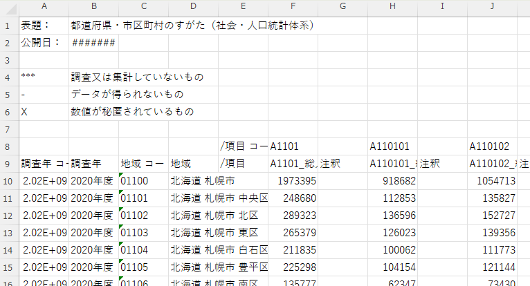
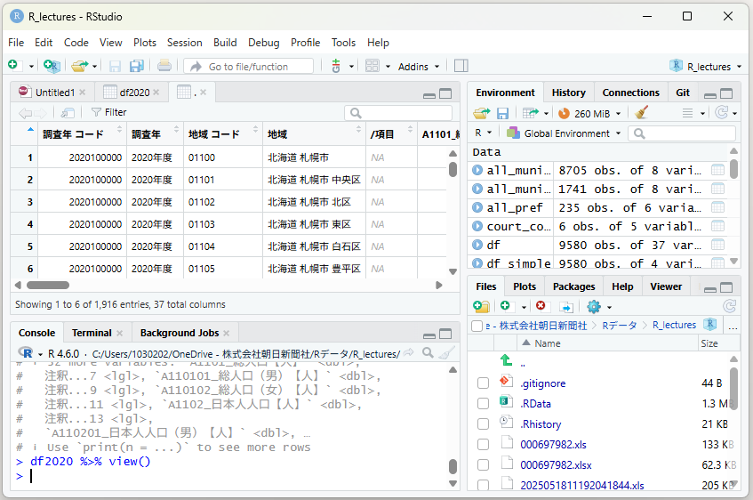

第1部 データを読む・加工する
データを読み込む
read_csvでファイルを読み、オブジェクトに入れて、中身を見る。ついでにR最大の発明「パイプ演算子」を覚えます。
まずは読み込む命令
さて、いよいよデータ分析に入っていきましょう。とはいえ分析をするには、まず対象となるデータが必要になります。RStudioの中でデータを「つくる」こともできますが、大量のデータを手入力するのは大変なので、どこか他のところから持ってくるほうがふつうです。このため、データをRStudioで読み込んでやるわけです。いろいろなファイル形式のデータがありますが、まずはcsv形式のものから始めてみましょう。
ただしRStudioでデータを読み込むときは、Excelファイルのアイコンをダブルクリックするときのようにはいきません。読み込みのための命令を出してやる必要があります。tidyverseのパッケージではこんな命令を使うと、読み込んだデータを「tibble」という形式に変えてくれます（Rのなかでのデータ形式にもいろいろありますが、ひとまずはtibbleからはじめることにします）。
read_csv()この丸括弧の中に、読み込みたいファイルのありかを書き込んだうえで、命令を出してやります。ファイルは使っているパソコンの中に保存されているものでもいいですし、ウェブ上に置いてあるものでもかまいません。
パソコンの中なら、たとえば
read_csv("data/xxx.csv")となりますし、ウェブ上なら
read_csv("https://xxx.xxx/xxx.csv")となります。このとき、ファイルのありかをダブルクオーテーション（"）で囲うのを忘れないようにしましょう。
読み込んだものを、どこかに置いておく
また、読み込むだけでなく、それをRStudioの中に保存するには、「代入」するための命令（付録Aで触れています）を使って以下のようなコードを書く必要があります。
df <- read_csv("data/xxx.csv")read_csv("data/xxx.csv") という命令（つまり「data」というフォルダのなかにおいてある「xxx.csv」というファイルを読み込んでくださいね、という命令）によって読みこんだtibble形式のデータが、df という「オブジェクト」に左向きの矢印で注入された、みたいな感じでイメージしてください（dfというのは、この手の教科書的なものによく出てきますが、「データフレーム」の頭文字です）。
オブジェクトというのもプログラミング業界の専門用語で、なんだかとっつきにくいですが、データとか数字とかのかたまりのようなものだと考えてください。
実際に読んでみる
はい、というわけで実践です。
2020年時点での全国の各自治体における人口のデータ（国勢調査）を使います。
プロジェクトのフォルダ内に data というフォルダを新しくつくって、その中にファイルを移しましょう。つまりファイルは data/人口データ2020.csv というフォルダに引っ越したことになります。この住所を指定して、読み込んでやるわけです。
（この先の章で使うファイルも付録Dにまとめて置いてあります。先に全部落としておきたい人はそちらから。もとの入手先はe-Statで、その手順も付録Dに書きました）
ただまぁ、RStudioで読み込む前に、中身がどんななのかExcelを使ってチェックしてみましょうか。

どうも、8行目まではいろんな説明文とか能書きとかが書かれていて、必要なデータ（と、そのラベル）は9行目からのようです。つまり、8行目までは飛ばしてしまったほうがよさそうです。なので、読み込むコードはこんな感じになります。
df2020 <- read_csv("data/人口データ2020.csv", skip = 8)skip= というのの後に、飛ばしたい行数分の数字を入力するわけです（skipの行数を指定しなければ、最初の行からすべて読み込みます）。これで最初の8行を無視した形でcsvファイルを読み込み、さらにそれを df2020 というオブジェクトに入れることができました。
ファイルをパソコン内に保存することなく、ウェブ上にあるものを直接読み込むというやり方でも、同じことができます。ウェブ上にあるファイルのありかを括弧内に入力して、
df2020 <- read_csv("http://www.xxxxxxxxx", skip = 8)とすればいいわけです。
中身を見る
さて、df2020 にはどんなデータが入ったんでしょうか。それを見るためにはシンプルに
df2020と入力すればいけます。こんなふうに表示されます（列が多いので、はじめの6列だけにしてあります）。
# A tibble: 1,916 × 6
`調査年 コード` 調査年 `地域 コード` 地域 `/項目` `A1101_総人口【人】`
<dbl> <chr> <chr> <chr> <lgl> <dbl>
1 2020100000 2020年度 01100 北海道 札… NA 1973395
2 2020100000 2020年度 01101 北海道 札… NA 248680
3 2020100000 2020年度 01102 北海道 札… NA 289323
4 2020100000 2020年度 01103 北海道 札… NA 265379
5 2020100000 2020年度 01104 北海道 札… NA 211835
6 2020100000 2020年度 01105 北海道 札… NA 225298
# ℹ 1,910 more rowsでもこれだと、はじめの方にある数列分、数行分しかチェックできません。全体をみてみたいと思ったら、こんなふうに入力してください。
df2020 %>% view()
すると、左上の枠のところにExcelみたいな表が出てきて、そこに df2020 の中身が表示されたのではないでしょうか。view() というのは、こうやって表形式でデータの中身を表示させるための関数です。df2020 %>% view() という文章は、df2020 というオブジェクトに view() という関数を適用しなさい、という意味です。
パイプ演算子
df2020 と view() の間にある %>% という記号は、「パイプ演算子」と呼びます。df2020 というオブジェクトを view() という関数に手渡しする仲立ちのような役割をしています。右向きの矢印みたいなものだと考えると、直感的にわかりやすいかもしれません。
view() という関数になぜ丸括弧がついているのか、気になった人もたぶんいると思いますが、それもこのパイプ演算子と間接的に関係しています。実はひとむかし前は、パイプ演算子というものは使われていなかったのです。さっきのと同じ命令を、パイプ演算子を使わないで書くとこんなふうになります。
view(df2020)ここで、「関数」という考え方そのものにも触れておきます。関数とは、ひとことで言えば、材料を受け取って、何か加工をして、できあがったものを返してくれる機械のことです。丸括弧の中に入れるのが材料。view() なら、受け取ったデータを表の形に広げて見せてくれますし、さっきの read_csv() なら、受け取ったファイル名のファイルを読み込んで、tibbleにして返してくれます。
数学で f(x) みたいな数式？を書いたのを覚えている方もいらっしゃるでしょう。xという変数にfという関数を適用したよ、という意味ですね。これと同じで、df2020 に view という関数をかけたものが view(df2020) と表現されるわけです。
ただ、関数が一つだけならまだいいんですが、いくつもいくつも関数を適用していくと、こんな感じになってしまいます。
D(C(B(A(x))))これはxという変数に関数Aを適用し、さらにそれに関数Bを適用し、さらに関数Cを、最後に関数Dを、というふうに、何重もの入れ子構造になっているわけです。非常に読みにくい、と思いませんか。一方で、パイプ演算子を使えば、同じ命令をこんなふうに書き表すことができます。
x %>% A() %>% B() %>% C() %>% D()これだと、左から右に字を読んでいくのと、関数をかけていく処理の流れが一致しているので、読みやすく、理解しやすい。だからパイプ演算子が人気になったわけです。
パン屋さんにたとえてみましょう。小麦を仕入れて、挽いて小麦粉にし、それをこねて生地にし、焼いてパンにする。「挽く」も「こねる」も「焼く」も、材料を受け取って別のものに変えて返す機械、つまり関数です。前の機械から出てきたものを、次の機械に手渡していく。その手渡しの役をしているのが、パイプ演算子です。
また、関数はもともと、適用する対象の変数などを丸括弧の中身に入れ込んでいくという書き方だったので、パイプ演算子を使えば丸括弧の中身が空っぽになる場合でも、丸括弧じたいは残すのが基本的なお作法とされているわけです。ま、view() とかのシンプルな関数なら、実際には丸括弧がなくてもちゃんと動いちゃうんですけどね。
それから、より新しいバージョンのRでは、|> という記号でパイプ演算子を表すこともあります。何がちがうかというと、こっちのほうが何となくシュッとしてます。あとは同じです。
……というのは厳密には間違いで、詳しくいうと動作に少し違いがあるらしいんですが、私はよく分かりません。この講座では %>% で通します。
あと、前節でも触れましたが、いちいち3文字打ち込むのがめんどくさいよ、というときには、コントロールキー(Ctrl)とシフトキー(Shift)、「M」のキーの三つを同時に打つと、パイプ演算子が出てきます。これを使うとだいぶ楽になります。
次の章から、この形でデータを加工していきます。